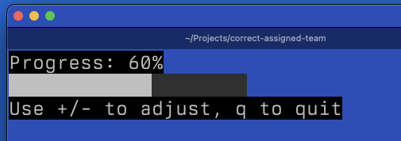

CELLIUM 003: progress bar
The New Progress Bar Widget
It's been a while since I've introduced a new widget in cellium, but a progress bar has been on the cards for a while. Sometimes there is a need to show a user that something is happening, and a simple percentage or a spinner doesn't quite cut it. People love graphs and movement, this is a simple compromise.
The new progress_bar widget is pretty straightforward. You give it an ID and a starting percentage, and it gives you back a widget map:
> progressbar:new(someid, 20)
The core logic lives in two functions: clamp/1 and build_bar/1.
Keeping it between 0 and 100
Any percentage passed to the widget is clamped to ensure it stays in the valid range of 0 to 100:
clamp(V) when V < 0 -> 0; clamp(V) when V > 100 -> 100; clamp(V) -> V.
This is used both in new/2 and in the update function, set_percentage/2.
Building the Bar Itself
The actual bar is constructed by build_bar/1. It needs to figure out how many filled characters and how many empty characters to draw.
The bar has a fixed width of 20 characters. The helper function calculate_filled/1 determines how many of those 20 should be filled based on the percentage:
This is implemented as:
calculate_filled(Percentage) -> round((Percentage / 100) * 20).
With the filled count, we can then generate the bar using Unicode block characters: ■ (full block) and ⊠ (light shade). In the Erlang source, these are the utf8 codepoints 9608 and 9617.
At some point, maybe I should allow 'styling' similar to box_styles, but thats for another day.
build_bar(Percentage) ->
Filled = calculate_filled(Percentage),
Empty = 20 - Filled, FilledChars = lists:duplicate(Filled, 9608),
EmptyChars = lists:duplicate(Empty, 9617),
AllChars = FilledChars ++ EmptyChars,
unicode:characters_to_binary(AllChars).
The image below shows the bar at 60% completion.

Figure 1: A progress bar in a terminal at 60%.
Simple, but effective. This will be handy for showing task progress in the terminal UI. As always, the full source is available for inspection.